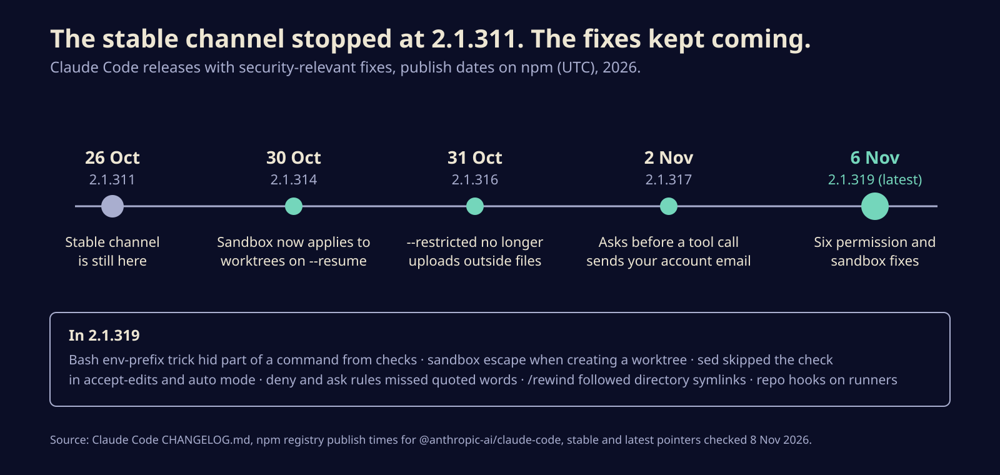
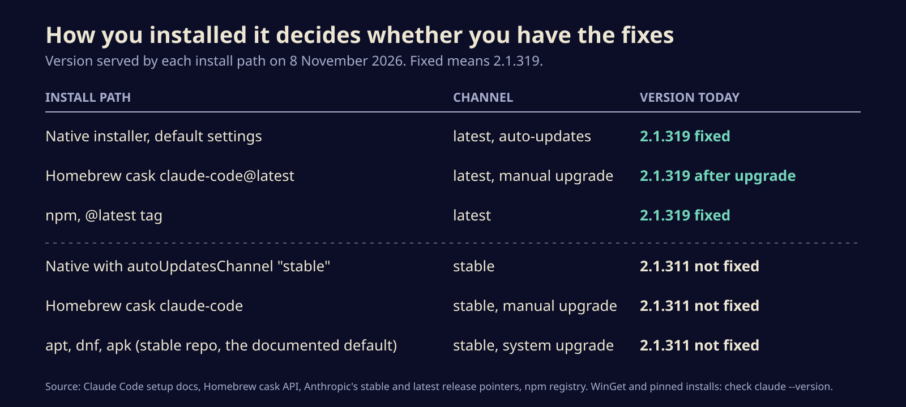

Claude Code 2.1.319 closes six permission gaps, and the stable channel doesn't have them yet
Anthropic's latest Claude Code release fixes ways a command could slip past permission rules or the sandbox. Here is what each fix covers, which install methods still serve 2.1.311, and how to check yours in a minute.
Claude Code 2.1.319 went out late on 5 November, US time, and buried in a changelog of more than a hundred lines are six fixes for ways a command could get past the tool's permission checks or out of its sandbox. If you let a coding agent run shell commands on your machine, these are the guard rails that decide what it can do without asking you first.
There is a catch. Anyone on Claude Code's stable release channel is still on 2.1.311, from 26 October, and that includes the default Homebrew cask and the default Linux package repositories. On those installs the fixes have not arrived, and nothing will tell you so.
What the six fixes close
Anthropic's changelog describes each fix in a single line, without technical detail, CVE numbers or severity scores. Read together, they cover the places where the permission system decides whether a command is safe:
- A crafted environment prefix. A Bash command that starts with variable assignments, such as
FOO=bar some-command, could be written so that part of the command was hidden from the permission check. The changelog calls it a permission bypass. - A sandbox escape when creating a worktree. Worktrees are the separate checkouts Claude Code uses to run parallel jobs. Creating one could reach outside the sandbox.
sedskipping the check in accept-edits mode and auto mode.sed -iedits files in place, so this was a way to change files the rules were meant to protect.- Deny and ask rules missing quoted words. A rule meant to block or flag a command did not match when that command was written with quotes around parts of it.
/rewindfollowing directory symlinks, so restoring a checkpoint could restore or delete a file outside the folder you meant.- Self-hosted runners and untrusted repos. With
--trust-workspace false, hooks in a repository's settings files and skills could still run. Now they don't.
The same release also stops a project's settings files or a plugin from switching auto mode's server-side safety check back on after you have switched it off yourself. Same theme: the repository you open should not get to rewrite your rules.

Why a missed rule matters more than it sounds
Most people do not watch every command an agent runs. They write a few deny rules (no rm -rf, no git push --force), turn on accept-edits or auto mode, and trust the tool to stop at the line. Every fix above is a case where that line had a gap.
The realistic attack is a booby-trapped repository, a poisoned dependency or a web page that steers the model into writing a command in exactly the shape the checker misread. Anthropic's last published advisory for Claude Code, on 26 October, described that same threat: code running inside the sandbox, planted by a malicious repo or install script, writing files outside the workspace. That one was rated High and fixed back in 2.1.251.
Anthropic has not said whether any of the new six were reported by outside researchers or used in the wild, and its advisory page lists none of them so far. Treat them as fixed weaknesses, not known attacks, and update anyway.
The stable channel is about two weeks behind
Claude Code ships two channels. The docs describe latest, the default, as getting new versions as soon as they ship, and stable as a build "typically about one week old" that skips releases with major regressions. On Sunday, Anthropic's stable pointer, the npm stable tag and the Homebrew claude-code cask all said 2.1.311. The latest pointer and the claude-code@latest cask said 2.1.319.
That trade made sense when the risk was a buggy build. It looks different when the newer builds are the ones with the security fixes. Stable users are also missing 2.1.314's fix for sandbox protections not applying to a worktree opened with claude -p --resume, and 2.1.316's fix for --restricted sessions uploading files from outside the working directories.

Check yours in a minute
- Run
claude --version. If it prints 2.1.319 or later, you are done. - Native installs on the default channel update in the background and take effect on the next start. Run
claude updateto do it now, then restart open sessions. - On the stable channel, you can switch to
latestin/configunder Auto-update channel, or set"autoUpdatesChannel": "latest"in settings. If you prefer to stay on stable, setminimumVersionto2.1.319in your settings. The docs say updates never install below that floor, so you can stay on stable without being moved back. - Homebrew: the
claude-codecask tracks stable.brew install --cask claude-code@latestgets 2.1.319 today. Homebrew does not auto-update either cask unless you setCLAUDE_CODE_PACKAGE_MANAGER_AUTO_UPDATE=1. - apt, dnf and apk: the documented setup points at the stable repository. Switch the repository line to
latestas the docs describe, or wait for stable to move. - Teams: managed settings can enforce
requiredMinimumVersion, which makes Claude Code refuse to start below that version. Use it for fleets and CI runners.
If you rely on deny rules, remember that matching a command's text was the weak spot in two of these fixes. The sandbox, and running untrusted repos in a throwaway container, still do more than any pattern list.
The email check, briefly
Two releases earlier, 2.1.317 added a check that asks before a web or shell tool call sends your account email address over the network. It followed a public report that the agent put a user's address into request headers for sites that ask bots for contact details. The Kernel Post reads the evidence as a narrow pattern, and commenters it cites disagree on how complete the fix is.
A permission rule is only as good as the parser reading the command, and the parser is the part that keeps getting patched.
Speed and safety are pulling against each other
Release channels were built for a world where the newest build was the riskiest one. Coding agents flip that: the tool changes weekly, and much of each week's work is closing new gaps in what the agent can do on its own. For a tool that holds a shell on your laptop, the safer default may be the fresher one, with a version floor rather than a lag. Expect more vendors to face the same choice, and to start labelling security fixes so that stable users can tell when waiting stops being the careful option.
Sources
- Anthropic, Claude Code CHANGELOG (2.1.311 to 2.1.319)
- Anthropic, Claude Code docs: Advanced setup, release channels and updates
- npm registry, @anthropic-ai/claude-code release times and dist-tags
- Homebrew, claude-code cask
- Anthropic, GitHub security advisory GHSA-5xjx-9qx6-jcrv (CVE-2026-88968)
- The Kernel Post, Claude Code email leak appears narrower than feared
Written with AI for Bade's Mod Shop. Facts are checked against the sources above on the day of publishing; if one is wrong, open an issue.